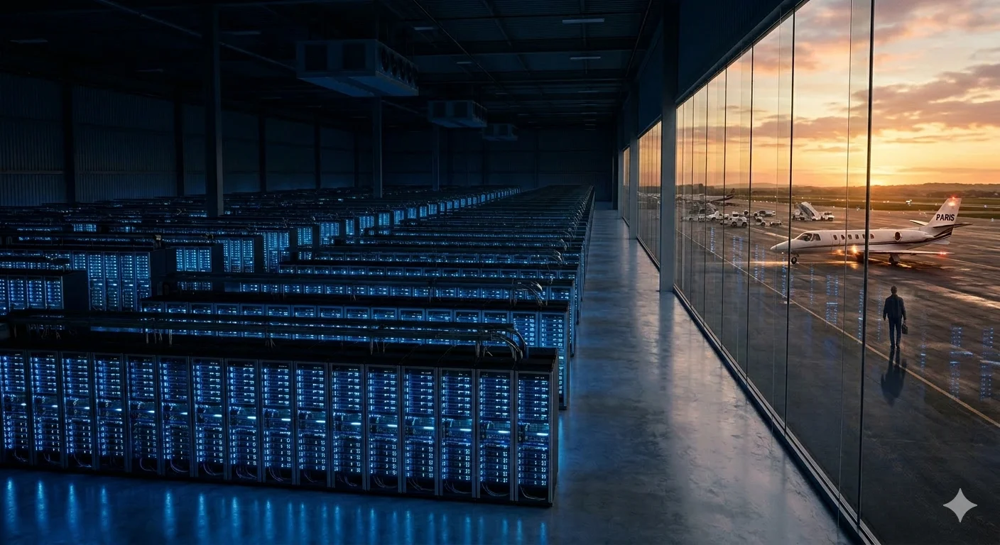
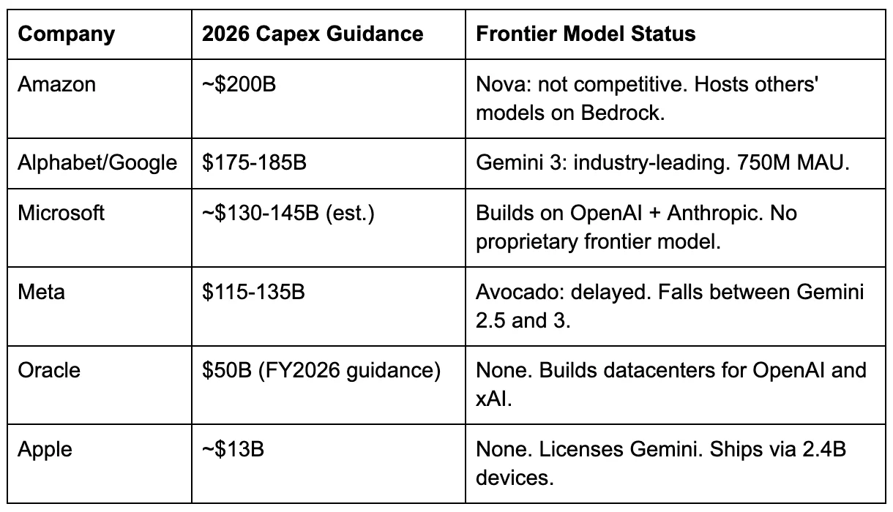
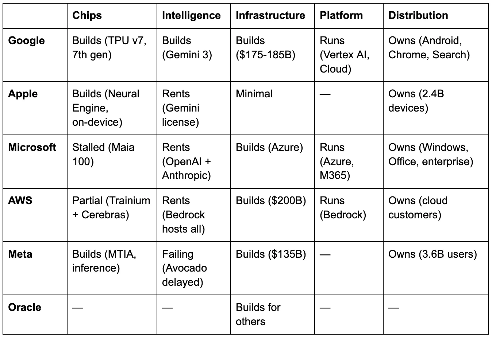

On March 10, 2026, Yann LeCun’s new company announced a $1.03 billion funding round at a $3.5 billion pre-money valuation.[1] The company had twelve employees, no product, and no revenue. Its technology — world models based on an architecture called JEPA — was developed during LeCun’s twelve years leading Meta’s Fundamental AI Research lab, the unit that had once made Meta one of the most respected AI research organizations in the world.[2] The investor list read like a verdict: Nvidia, Bezos Expeditions, Eric Schmidt, Samsung, and Toyota Ventures.[3]
The next morning, Meta unveiled four custom AI chips — the MTIA 300, 400, 450, and 500 — built with Broadcom and fabricated by TSMC.[4] The company said it would deploy all four within two years on a six-month cadence, the fastest chip release schedule in the industry.[5] The MTIA 400 claimed raw performance competitive with that of leading commercial generative AI inference products.[6] Meta already had hundreds of thousands of first-generation MTIA chips in production, serving the ranking and recommendation systems behind Facebook and Instagram.[7]
Two days later, the New York Times reported that Meta had delayed its frontier AI model, codenamed Avocado, from a planned March launch to at least May.[9] In internal testing, the model fell short of Google’s Gemini 3 in reasoning, coding, writing, and agentic behavior — performing somewhere between Gemini 2.5 from March 2025 and Gemini 3 from November 2025.[10] Three sources told the Times that leaders inside Meta’s AI division had discussed temporarily licensing Google’s Gemini to power Meta’s products while Avocado caught up.[11] By Friday, Reuters reported that Meta was weighing layoffs affecting 20 percent or more of its workforce — roughly 15,800 people — to offset the cost of its AI infrastructure buildout.[12]
The researcher that Meta pushed out raised a billion dollars on Monday. The infrastructure Meta built without him launched on Tuesday. The model Meta built without him failed on Thursday. Five days that revealed the most important structural split in the AI industry: the distance between building infrastructure and producing intelligence. And one company that spent $135 billion on the first and destroyed its capacity for the second.[13]
The paradox in numbers
Meta’s 2026 capital expenditure guidance — $115 billion to $135 billion, including principal payments on finance leases — represents the largest single-year AI infrastructure commitment any company has ever made.[14] It nearly doubles Meta’s 2025 actual spending of $72.2 billion and dwarfs the annual GDP of most countries.[15] The money is building data centers, buying GPUs, and deploying custom silicon at a pace Meta’s VP of Engineering Yee Jiun Song called “unusual for any silicon company or team.”[16]
Spending more doesn’t help if you can’t convert capital into intelligence.[71]

The chips are real. MTIA is not vaporware. The 300-series is in production. The 400-series has completed testing and is entering data centers. The 450-series doubles HBM (high-bandwidth memory) capacity and claims to exceed the inference performance of leading commercial products. The 500-series still adds 50 percent more bandwidth.[17] Across the lineup, Meta claims a 25-fold increase in compute and a 4.5-fold increase in memory bandwidth.[18] Broadcom confirmed that Meta will install “multiple gigawatts” of custom silicon in 2027 and beyond.[19] These are serious inference chips built by a serious silicon team.
But in the same weeks that Meta announced its chip roadmap, it also signed a multi-billion-dollar deal with Nvidia for training GPUs, a $60 billion deal with AMD for training and inference hardware, and a separate agreement to use Google’s TPU chips for training capacity.[20] Meta builds its own inference silicon. It rents training silicon from three competitors — including the company whose model it is now considering licensing. The company that designed four custom chips on a six-month deployment cadence cannot train a competitive model on those chips, because the chips were designed for inference, not training. CFO Susan Li told a Morgan Stanley conference that Meta is “hopeful” of expanding MTIA to training “eventually”— an aspirational statement with no timeline.[21]
Meta is world-class at delivering intelligence to 3.6 billion daily users. It cannot produce the intelligence it delivers. That gap — between operational excellence at the serving layer and structural failure at the creation layer — is a category error with a $135 billion price tag. And it has a specific cause.
What Meta had
FAIR — Facebook AI Research, later Fundamental AI Research — was founded in December 2013 when Mark Zuckerberg recruited Yann LeCun, a professor at New York University and one of the three researchers who would share the 2018 Turing Award for their foundational work on deep learning.[22] For the next decade, FAIR operated as an academic-style research lab inside a commercial company. Researchers published openly, explored long-term ideas, and pursued directions that might not produce revenue for years. LeCun described it as “a tabula rasa with a carte blanche” where “money was clearly not going to be a problem.”[23]
FAIR never topped the closed-model leaderboard — never beat GPT-4, never beat Gemini. That concession matters. But FAIR built Llama, and Llama changed the industry’s structure. The decision to release a competitive large language model under an open license broke the assumption that frontier AI would remain the exclusive property of three or four closed labs. Llama didn’t win benchmarks against GPT-4. It did something harder: it created an ecosystem. Thousands of companies, researchers, and governments built on Llama because FAIR’s culture — publish openly, share weights, let the community iterate — made that possible.[24]
No operator culture produces that decision. Operator culture closes the code and ships the product. Research culture opens the weights and builds the field. What research culture generates isn’t any single model — it’s the architectural intuition, the willingness to explore directions that won’t ship for years, and the tolerance for negative results that inform the next attempt. Those are the inputs to the next breakthrough. You can’t buy them with a $100 million signing bonus. You grow them over a decade in a lab that protects long-horizon work from quarterly pressure.
Frontier model training does require operational excellence — running a 100,000-GPU cluster reliably for months is serious engineering. But it also requires research insight about architecture and data curation that no amount of operational discipline can substitute for. Meta’s error wasn’t hiring operators. It was replacing researchers with operators rather than pairing them.
What Meta did
In April 2025, Meta launched Llama 4 to a reception that LeCun would later describe with unusual bluntness: the benchmarks were “fudged a little bit,” with the team using different model variants for different benchmarks to produce better numbers.[25] An experimental version submitted to Chatbot Arena — a public benchmark where models are ranked by blind human preference — produced verbose, emoji-laden responses optimized for human preference rankings, and bore little resemblance to the publicly released models.[26] The research community noticed immediately. Zuckerberg, by LeCun’s account, was “really upset and basically lost confidence in everyone who was involved.”[27]
The response was not to reinvest in the research culture that could have prevented the problem. It was to replace it. Joelle Pineau, who had led FAIR since 2023, departed in May after eight years at the company.[28] In June, Zuckerberg spent $14.3 billion to acquire a 49 percent stake in Scale AI and installed its 28-year-old co-founder, Alexandr Wang, as Meta’s first Chief AI Officer, leading a new unit called Meta Superintelligence Labs.[29]
Wang’s background was in data infrastructure. Scale AI is a data labeling and evaluation company — essential plumbing for AI development, but not a frontier model builder. Wang had never led an AI research lab or trained a large language model.[30] LeCun’s assessment, delivered in a Financial Times interview after his departure, was precise: “He learns fast, he knows what he doesn’t know. There’s no experience with research or how you practice research, how you do it. Or what would be attractive or repulsive to a researcher.”[31]
What Wang brought was operator culture: ship fast, close the code, productize everything. The hires matched the mandate. Nat Friedman, the former CEO of GitHub, came in to lead product. Shengjia Zhao, a co-creator of ChatGPT, joined as chief scientist — and reportedly threatened to quit within days of arriving, requiring a title upgrade to retain him.[32] Compensation packages for recruits from Google, OpenAI, and Anthropic reached $100 million to $300 million over four years.[33] The money attracted talent. Whether it attracted the right kind of talent is the question the next twelve months answered.
In October, Wang laid off 600 people from Meta Superintelligence Labs, with cuts concentrated in FAIR.[34] His internal memo explained the logic: “By reducing the size of our team, fewer conversations will be required to make a decision, and each person will be more load-bearing.”[35] The reasoning is sound for shipping a product — and catastrophic for running a research lab, where the “unnecessary conversations” are often where the breakthroughs happen. It was the right framework applied to the wrong problem.
The robotics group was dissolved. FAIR was pushed toward short-term projects aligned with TBD Lab, the new unit developing Meta’s frontier models under Wang’s direct leadership.[36] Llama development, which FAIR had originated, was formally moved to TBD Lab. The open-source philosophy that had defined Meta’s AI identity was abandoned — Avocado would be proprietary, a closed model in the mold of GPT or Gemini.[37]
Researchers began leaving within weeks of the reorganization. At least eight departed in the months following MSL’s creation, including several who never formally started their new roles.[38] The departures were negatively selected: the researchers with the best outside options — which is to say, the ones with the most valuable research intuitions — left first. Multiple people went to OpenAI. Chaya Nayak, a longtime director of GenAI product management, left for OpenAI’s Special Initiatives group. LeCun himself announced his departure in November, telling the Financial Times that the new hires were “completely LLM-pilled” and that Meta’s approach to superintelligence through language model scaling was “a dead end.”[39] His parting line: “You don’t tell a researcher what to do. You certainly don’t tell a researcher like me what to do.”[40]
By December, Wang reportedly told colleagues he felt “suffocated” by the level of oversight Zuckerberg maintained over AI strategy.[41] In March 2026, Meta created a parallel Applied AI Engineering group under Maher Saba, a Reality Labs veteran reporting to CTO Andrew Bosworth — effectively splitting Wang’s authority nine months after his $14.3 billion appointment.[42] Meta spokesperson Andy Stone insisted Wang’s influence was “growing, not waning.”[43] The organizational structure told a different story: repeated restructures in nine months, the research lab gutted, its founder gone, and a parallel organization created to hedge against the remaining one.
The market’s verdict
The three-day sequence in March was not a coincidence. It was a consequence.
LeCun raised $1.03 billion for AMI Labs on the strength of a single asset: the research intuition and architectural vision that Meta had decided it didn’t need. The investors — Nvidia, Bezos, Schmidt, Samsung — were not betting on a product. They were betting on a capability. Research culture is a scarce asset, and the market priced it accordingly: $3.5 billion pre-money for twelve people and an idea.[44]
Two days later, the model that Wang’s operational culture produced — Avocado, built by TBD Lab, using the fast-ship, closed-source, operator-driven methodology the reorganization was designed to enable — couldn’t beat a model built by the company that still employed its research leader.[45] Google’s Demis Hassabis won the 2024 Nobel Prize in Chemistry for work conducted at Google DeepMind.[46] He was not replaced by an operator. He was promoted.
The category error is now nameable. Frontier AI is a research problem that uses infrastructure as an input. Meta treated it as an infrastructure problem that uses researchers as an input. When the researchers didn’t produce on an operational timeline, Meta cut them and hired operators. The operators built competitive chips and massive data centers — because building chips and data centers is an operational scaling problem, which operators are excellent at. The model didn’t come because models are not an operational scaling problem. DeepSeek demonstrated this from the other direction: roughly $5.6 million in pre-training compute, 2,048 GPUs, and a research-led team produced a model that triggered emergency “war rooms” inside Meta.[47] The conversion factor isn’t capital. It’s a research culture.
The counterexample is OpenAI, where an operator CEO built the industry’s leading frontier lab. But Altman’s organizational architecture protected research autonomy — Sutskever set the research agenda for years, Murati ran execution, and the research team’s timelines were not subordinated to product shipping schedules until the very tensions that led to Altman’s brief firing. What matters is not whether the CEO is an operator or a researcher — it is whether the organizational structure shields long-horizon research from short-horizon operational pressure. Meta didn’t. Google did.
What actually exists
Meta’s inference infrastructure is world-class. Hundreds of thousands of MTIA chips serve 3.6 billion daily active users across Facebook, Instagram, WhatsApp, and Threads. The ad targeting engine — the business that generated $201 billion in revenue in 2025 — runs superbly on this stack.[49] Meta AI, the company’s conversational assistant, surpassed 700 million monthly active users.[50] And the balance sheet clock is ticking. Meta generated $46 billion in free cash flow last year. Its 2026 spending plan, at the top of the range, is nearly three times that.[72] The math requires either a revenue acceleration Meta has not guided for, or a drawdown of the $78 billion cash reserve that took a decade of advertising monopoly to build.[73]
The problem is the layer above: frontier intelligence. The layer Zuckerberg staked his capex narrative on when he told investors that 2026 would be “a big year for personal superintelligence.”[51] The layer that justifies the $135 billion to Wall Street. The layer where MTIA chips are irrelevant because they don’t train models, and where $100 million signing bonuses are irrelevant because mercenaries optimize architectures they didn’t invent.
The Gemini licensing discussion is the structural tell. The company, which is spending more on AI infrastructure than any other company in history, is considering renting intelligence from a competitor. Not because it can’t afford to build. Because it can’t produce. Meta’s stock fell 3.8 percent on March 13 alone, to $613 — down more than 23 percent from its September high of $796 — as the Avocado delay and layoff reports landed on the same day.[75] The market’s verdict arrived faster than the model.
Then, on Monday, the sequel. Meta signed a cloud computing deal with Nebius worth up to $27 billion — $12 billion in initial compute capacity starting in 2027, plus up to $15 billion more over five years — for access to Nvidia’s next-generation Vera Rubin platform.[76] Nebius, a Dutch AI infrastructure company in which Nvidia invested $2 billion last week, rose 12 percent on the announcement. Meta’s stock rose 3 percent the same morning, boosted by the Nebius deal and the weekend’s layoff reports. Wall Street’s message was legible: cut the humans, buy more infrastructure. The dependency chain now runs five layers deep — Meta rents training silicon from Nvidia, AMD, and Google, rents cloud compute from Nebius, and is considering licensing intelligence from Google. Even within its own inference stack, Meta’s MTIA chips require Nvidia’s Vera CPUs as orchestrators for agentic workloads.[77] The company, which is spending $135 billion on AI infrastructure, is renting every input except the electricity.
The mirror and the reversion
Google made the opposite decision at the same fork.
In April 2023, Google merged its two AI research units — Brain (founded in 2011 by Jeff Dean) and DeepMind (acquired in 2014 for roughly $500 million) — into Google DeepMind.[52] The decision that mattered was who would lead it. Google chose the researcher, Hassabis, who became CEO of the combined unit. Dean was elevated to Chief Scientist. The research leader was empowered, not replaced by an operator.[53] The merger wasn’t frictionless — DeepMind lost researchers to Anthropic and other startups — but the institutional decision was clear: research culture sets the direction, operational culture supports it.
The results speak in the only language investors trust. Gemini 3 is the model Meta can’t beat. Google’s Gemini app reached 750 million monthly active users.[54] Eight million enterprise seats sold.[55] Cloud revenue grew 48 percent year over year to a $70 billion-plus annual run rate, with a $240 billion backlog.[56] TPU v7 “Ironwood” represents Google’s seventh generation of custom AI silicon — a decade of co-design between chip architects and model researchers that no competitor can replicate by writing a check.[57] Google controls five of the six layers that determine an AI company’s structural position: chips, intelligence, infrastructure, platform, and distribution. Every layer generates revenue independently, and each reinforces the others — a structural position no other public company in the industry can match.
Amazon Web Services tells the same story from the infrastructure side — and the Cerebras deal announced on the same Thursday as the Avocado delay completes the pattern. AWS tried to build frontier models. Titan was, as I documented in an earlier analysis, a press release with an API endpoint. Nova is a message to analysts.[58] The models never competed. So AWS reverted to what its institutional DNA supports: platform operations. Bedrock hosts Claude, GPT, Llama, and Mistral. It wins regardless of which model wins. That reversion was healthy because AWS has a platform to revert to.
Now the reversion extends to silicon. Trainium, AWS’s custom training chip, handles prefill — the computationally intensive phase of processing a prompt. But for decode — the serial, memory-bandwidth-intensive phase of generating tokens — AWS brought in Cerebras and its wafer-scale CS-3 engine, hosted inside AWS data centers on Amazon’s own networking and security stack.[59] The architecture is Bedrock logic applied to chips: not “our silicon is best,” but “we’ll host the right silicon for each phase of the workload.” AWS tried to build its own models and reverted to hosting everyone else’s. Then it tried to build its own inference silicon and reverted to hosting Cerebras’s. The pattern is fractal—and it works because the platform absorbs every reversal.
Meta cannot follow either path. It cannot follow Google’s path because the research culture is gone — LeCun is in Paris, FAIR is gutted, the institutional knowledge walked out the door, and was immediately funded at a billion dollars. It cannot follow AWS’s path because it has no platform to fall back on. Meta’s infrastructure doesn’t serve external customers. There is no Bedrock equivalent. Meta’s chips serve Meta’s products. Meta’s data centers serve Meta’s models. If the model fails, the infrastructure serves a failed model, with no marketplace to absorb the loss. Apple, meanwhile, opted out of the intelligence race entirely — licensing Google’s Gemini for its revamped Siri, treating models as commodity inputs to a distribution problem it dominates through 2.4 billion devices, and sitting on $141 billion in cash.[60] Microsoft built its flagship AI product, Copilot Cowork, on Anthropic’s Claude rather than OpenAI’s models, pivoting from single-model dependency toward a platform play where the underlying intelligence is swappable.[61]
The grid

The table tells the story. Google survives disruption at any single layer because the others generate independent value — five filled cells, each reinforcing the rest.[62] Apple’s bet is that intelligence commoditizes, and the company that owns 2.4 billion endpoint devices wins regardless of whose model runs on them.[63] Microsoft’s real-time pivot from OpenAI exclusivity to model diversity — building Copilot Cowork on Anthropic’s Claude — is a strategic admission that no single intelligence provider is safe to depend on.[64] AWS’s every reversion strengthens the platform: from proprietary models to Bedrock marketplace, from proprietary inference silicon to the Cerebras partnership.[65] Meta’s two empty cells — platform and intelligence — are the two layers its business model cannot survive without.[66]
Oracle is the grid’s bottom row — the only company whose AI infrastructure exists solely to serve others’ models. Oracle’s data centers serve OpenAI’s, xAI’s, and Meta’s models. The company is cutting an estimated 20,000 to 30,000 employees to free cash for construction, while carrying more than $100 billion in debt and watching its borrowing costs rise as banks pull back from datacenter project lending.[67][68][69] The market has already delivered a verdict — Oracle’s stock has fallen roughly 54 percent from its September 2025 highs — but the grid revealswhythe market priced it in. I analyzed Oracle’s structural position in detail in a prior piece: the codependency among Oracle, OpenAI, and SoftBank creates a system in which each party’s commitments depend on the others’ execution, and none can exit without triggering a cascade.[70] Oracle is building infrastructure for an intelligence layer it doesn’t control, financed by debt markets losing confidence, and cutting the humans who maintain its existing business to fund construction. Every empty cell in Oracle’s row is a dependency on someone else.
And financing every position on the grid sits Nvidia, which has invested an estimated $50 billion-plus in its own customers — CoreWeave, Nebius, OpenAI, Anthropic, Lumentum, Coherent — creating the demand for the GPUs that generate its $216 billion in annual revenue.[8] The arms dealer doesn’t need to own any layer. It needs every layer to keep buying ammunition.
The grid’s diagnostic sentence: for any company spending on AI, the question is not how much.[74] It is which layers you control, whether your business model survives without the layers you don’t, and whether you have the organizational culture — not the budget, the culture — to produce at the layers you’re missing.
What breaks
Three scenarios test the thesis.
Avocado ships competitively in May. The category error claim weakens for Meta specifically, though not as much as it appears, because Avocado was conceived and substantially developed under the old research culture. The real falsification point is Watermelon, the next frontier model, built entirely under Wang’s operator-driven structure. If Watermelon competes with whatever Google and OpenAI ship in late 2026, the thesis breaks: operator culture can produce frontier intelligence given enough capital and time. If Watermelon disappoints — if the model that was conceived, trained, and shipped entirely without FAIR’s institutional knowledge falls short — the category error is confirmed. Either way, the grid still holds as a diagnostic tool, because Meta’s structural exposure (no platform, no training silicon, rented intelligence) remains even if one model ships well.
Models commoditize. Apple’s bet proves right, and the intelligence layer becomes interchangeable. Meta’s failure to produce a frontier model stops mattering, because nobody’s proprietary model matters. In this scenario, MTIA’s inference efficiency and Meta’s distribution to 3.6 billion users become the strategic assets. The category error still occurred, but the market shift absorbed its consequences. The $135 billion produced the world’s best inference platform for commodity models, which is a defensible business, even if it’s not the one Zuckerberg described.
The category error compounds. More infrastructure spending creates more operational pressure. More pressure demands faster shipping timelines. Faster timelines drive out remaining researchers who value patience and exploration. The intelligence gap widens. Meta becomes the most expensive licensee of someone else’s model in the history of the technology industry. The capex narrative quietly shifts from “building superintelligence” to “building the world’s best delivery system for someone else’s brain.” AWS deliberately chose that position, and it works — because AWS charges rent. Meta’s version lacks a revenue model. The data centers serve Meta’s own products, and those products need a competitive model to justify the investment thesis Wall Street bought.
The grid identifies, in one framework, why Google can survive almost anything, why Apple’s restraint may be prescience, why Microsoft is hedging in real time, why AWS’s reversions strengthen rather than weaken it, and why Meta is the only company in the grid that destroyed its position at the one layer its business model cannot survive without.
Meta built the datacenter. The brain caught a flight to Paris.
Notes
Notes
[1]TechCrunch, March 9-10, 2026. AMI Labs (Advanced Machine Intelligence Labs) funding round. Pre-money valuation $3.5 billion; post-money approximately $4.53 billion. Described as Europe’s largest seed round. Co-led by Cathay Innovation, Greycroft, Hiro Capital, HV Capital, and Bezos Expeditions.
[2] LeCun founded FAIR in December 2013. He shared the 2018 Turing Award with Geoffrey Hinton and Yoshua Bengio for foundational work on deep learning. JEPA (Joint Embedding Predictive Architecture) predicts future states in abstract representational space rather than pixel space — a departure from LLM approaches. LeCun developed JEPA during his final years at Meta.
[3] Strategic investors include Nvidia, Samsung, Sea, Temasek, and Toyota Ventures. Individual investors include Jeff Bezos, Mark Cuban, Eric Schmidt, Tim Berners-Lee, Jim Breyer, and Xavier Niel. CEO is Alexandre LeBrun (formerly Nabla); LeCun serves as Executive Chairman.
[4]Meta Newsroom, March 11, 2026. All four chips use the RISC-V architecture, are built in partnership with Broadcom, and are fabricated by TSMC.
[5] VP of Engineering Yee Jiun Song,CNBC interview, March 11, 2026: “It’s unusual for any silicon company or team to be releasing a new chip every six months.”
[6] Meta blog post, March 11, 2026. MTIA 400 is described as the first Meta chip with “raw performance competitive with leading commercial products” for generative AI inference. Uses two compute chiplets. Completed testing phase.
[7] Meta Newsroom: “We deploy hundreds of thousands of MTIA chips for inference workloads across both organic content and ads on our apps.” MTIA 300 is in production as of March 2026.
[8]Nvidia SEC filing, March 11, 2026. $2 billion investment in Nebius Group NV at $94.94 per share, approximately 8.3% stake. Partnership targets 5 GW of Nvidia systems deployed by the end of 2030. Follows $2B investment in CoreWeave (January 2026), $30B in OpenAI (February 2026), up to $10B in Anthropic (November 2025), $2B each in Lumentum and Coherent (March 2026).
[9] New York Times, March 12, 2026. Three sources familiar with the matter. The model was originally targeted for late 2025, slipped to Q1 2026, then mid-March, and is now at least May.
[10] NYT and Reuters independently confirmed. “The model outperformed Meta’s previous model and did better than Google’s Gemini 2.5 model from March [2025], two of the people said. But it has not performed as strongly as Gemini 3 in November.” Performance gaps specifically in reasoning, coding, writing, and agentic behavior.
[11] NYT: “The leaders of Meta’s A.I. division had instead discussed temporarily licensing Gemini to power the company’s A.I. products, though no decisions have been reached.” Meta spokesperson Dave Arnold: “We’re excited for people to see what we’ve been cooking very soon.”
[12]Reuters, March 13, 2026(Katie Paul, Jeff Horwitz, Deepa Seetharaman). Meta employed 78,865 people as of December 31, 2025. 20% = approximately 15,800. Meta spokesperson Andy Stone: “This is speculative reporting about theoretical approaches” — notably not a denial.
[13]Meta Q4 2025 earnings release, January 28, 2026: 2026 capital expenditure guidance of $115-135 billion, including principal payments on finance leases, “with year-over-year growth driven by increased investment to support our Meta Superintelligence Labs efforts and core business.”
[14] Meta Q4 2025 earnings release. For comparison: Alphabet guided $175-185B, Amazon guided ~$200B, Microsoft tracking ~$130-145B (H1 actual $72.4B, no explicit full-year guidance). Meta’s figure represents approximately 57-67% of FY2025 revenue of $201 billion — the highest capex-to-revenue ratio among the hyperscalers.
[15] Meta FY2025 actual capital expenditures, including finance lease payments: $72.2 billion, per Q4 2025 earnings release. FY2024: $39.2 billion.
[16] Song, CNBC, March 11, 2026.
[17] Meta AI Blog, March 11, 2026. MTIA 450 doubles MTIA 400’s HBM bandwidth; supports MX4 data type yielding approximately 6x FLOPs versus FP16/BF16. MTIA 500 adds 50% more HBM bandwidth and 80% more capacity than MTIA 450, uses a 2x2 chiplet configuration. Mass deployment: MTIA 450 early 2027, MTIA 500 later 2027.
[18] Meta blog post. Across the MTIA 300-500 lineup: HBM bandwidth increases by 4.5x, and compute FLOPs increase by 25x.
[19] Broadcom statement reported in Seoul Economic Daily and CNBC, March 2026.
[20]AMD deal: approximately $60 billion, announced February 2026. AMD issued Meta warrants for up to 160 million shares (~10% of the company). Nvidia deal: multi-billion, ongoing. Google TPU deal: confirmed by multiple outlets; Meta signed a “multibillion-dollar deal for Google’s TPU chips” per Mashable/Tech Brew, March 2026.
[21] Susan Li, CFO, Morgan Stanley Technology Conference, March 4, 2026: “The sort of ranking and recommendations workloads have been where we have started, and that’s the place where we have rolled out custom silicon at the most scale. But we expect and are hopeful that we are going to expand that over time, including eventually to training AI models.”
[22] LeCun joined Facebook in December 2013 to serve as FAIR's director while maintaining his NYU professorship. The Turing Award was shared with Geoffrey Hinton and Yoshua Bengio in 2019 (awarded for 2018 contributions). CNBC, November 19, 2025.
[23] LeCun, Financial Times interview, circa January 3-5, 2026.
[24] Llama 1 (February 2023) was the first competitive large language model released with open weights by a major lab, authored by FAIR researchers. Its release catalyzed an open-source ecosystem: within months, thousands of fine-tuned variants appeared on Hugging Face, and Llama became the foundation for models deployed by governments, startups, and enterprises globally. By Llama 3.1 (July 2024), Meta’s open models were the most widely deployed non-proprietary LLMs worldwide. More than half of the 14 original Llama authors left Meta within six months of publication.Fortune, April 2025: former FAIR employees described the lab as “dying a slow death.”
[25] LeCun, FT interview: “Results were fudged a little bit.” He specified that teams used “different models for different benchmarks to give better results.”
[26] The “Llama-4-Maverick-03-26-Experimental” submission to LM Arena briefly reached No. 2 (ELO 1,417) using verbose, emoji-laden responses. LM Arena condemned the approach. The publicly released Maverick dropped to 32nd-35th place after the experimental version was removed. Llama 4 launched Saturday, April 5, 2025 — an unusual weekend release.
[27] LeCun, FT interview: Zuckerberg “was really upset and basically lost confidence in everyone who was involved in this. And so basically sidelined the entire GenAI organization.”
[28] Joelle Pineau announced her departure on April 1, 2025 (Bloomberg, CNBC). Last day May 30, 2025. She had led FAIR since early 2023 and joined Meta in 2017.
[29] Meta acquired a 49% non-voting stake in Scale AI for approximately $14.3 billion in June 2025. One source reports $14.8B; $14.3B is the more widely reported figure. Wang became Meta’s first Chief AI Officer, leading the newly created Meta Superintelligence Labs. Fortune, CNBC, Bloomberg.
[30] Scale AI provides data labeling and AI model evaluation services. It grew to a valuation of ~$29 billion through the Meta deal. Fortune: “Scale doesn’t make AI models.” TechCrunch: “Wang hasn’t led an AI lab of this sort before.”
[31] LeCun, FT interview, January 2026.
[32] Nat Friedman (former GitHub CEO) leads Products and Applied Research within MSL. Shengjia Zhao (co-creator of ChatGPT, GPT-4, and other OpenAI models) became Chief Scientist. FT and Wired reported (August/September 2025) that Zhao threatened to quit shortly after joining and was given the title of Chief Scientist to retain. B-tier sourcing, anonymous.
[33] Compensation figures from VentureBeat, CNBC, and eWeek, citing industry sources: packages of $100 million to $300 million over four years for senior recruits from Google, OpenAI, and Anthropic.
[34] Axios, October 22, 2025: “Meta is cutting roughly 600 positions out of the several thousand roles within Meta’s superintelligence lab.” Cuts concentrated in FAIR and AI infrastructure teams. TBD Lab (Wang’s frontier model unit) was spared.
[35] Alexandr Wang, internal memo, obtained by Business Insider, October 2025.
[36] The protein-folding research team was cut. Researcher Yuandong Tian confirmed his reinforcement learning team was affected. FAIR was directed to integrate its research into TBD Lab’s training runs, per Business Insider. Fortune: FAIR was “increasingly shoved out of the limelight.”
[37]Bloomberg, December 2025: Avocado expected to launch as a closed, proprietary model — “the biggest departure to date from the open-source strategy Meta has touted for years.” CNBC, December 9, 2025, confirmed the pivot.
[38] AIM Media House, August 2025: documented at least eight departures in the weeks following MSL’s creation. Named: Avi Verma (returned to OpenAI), Ethan Knight (returned to OpenAI), Rishabh Agarwal (joined Periodic Labs), Chaya Nayak (joined OpenAI Special Initiatives). Multiple others undisclosed.
[39] LeCun, FT interview: “I’m not gonna change my mind because some dude thinks I’m wrong. I’m not wrong.” On the LLM approach: “The path to superintelligence — simply train large language models, train with more synthetic data, hire thousands of people to ‘educate’ your system in post-training, and invent new tricks for reinforcement learning — I think it’s complete nonsense. It simply won’t work.” The “complete nonsense” quote refers specifically to the technical approach, not to Meta’s broader strategy.
[40] LeCun, FT/The Decoder interview, January 2026.
[41] Financial Times, December 2025. Wang reportedly told colleagues he felt “suffocated” by Zuckerberg’s oversight. B-tier, anonymous sourcing.
[42] The Applied AI Engineering group was created in March 2026 under Maher Saba (VP, formerly Reality Labs), reporting to CTO Andrew Bosworth. Focuses on data pipelines, internal tools, and building a “data engine.” Engineering teams previously under Wang were moved to Saba’s unit.
[43] Andy Stone, via X (formerly Twitter), March 2026: “Totally false… Alex helped create the new team, still runs MSL and TBD, has growing, not waning influence. This is all so silly.”
[44] AMI Labs raises details per TechCrunch, PitchBook, and EU-Startups. The piece takes no position on whether LeCun’s world model thesis will prove correct — the structural claim is that the market priced research capability as an investable asset at $3.5 billion pre-money, independent of current product.
[45] Avocado is developed by TBD Lab, the ~100-person unit within MSL under Wang’s direct leadership. Bloomberg reported that TBD Lab used distillation from rival models, including Google’s Gemma, OpenAI’s gpt-oss, and Alibaba’s Qwen. B-tier, anonymous sourcing.
[46] Demis Hassabis and John Jumper shared the 2024 Nobel Prize in Chemistry for AlphaFold’s protein structure prediction.Nobel Prize organization, October 2024. A-tier.
[47] DeepSeek. The widely cited “$5.6 million” figure refers only to pre-training compute costs; the total development cost was substantially higher. DeepSeek is trained on 2,048 Nvidia H800 GPUs. Fortune reported that Meta assembled four “war rooms” to analyze DeepSeek’s success; an anonymous Meta employee posted that DeepSeek “rendered Llama 4 already behind in benchmarks” and that “every single ‘leader’ of GenAI org is making more than what it cost to train DeepSeek V3 entirely.”
[48] Author disclosure. Three years as Chief Evangelist at Hugging Face (2021-2024). Previous: six years at AWS. Current: AI Operating Partner at Fortino Capital.
[49] Meta FY2025 total revenue: $200.97 billion, perQ4 2025 earnings release (SEC filing, January 28, 2026). A-tier. Revenue growth of 22% YoY driven by 12% increase in ad impressions and 9% increase in average price per ad. Q4 2025 revenue was $59.89 billion. Previous version of this footnote incorrectly cited the FY2024 figure of $164.5 billion; corrected to FY2025 actual.
[50] Zuckerberg, Q3 2025 earnings call: Meta AI surpassed 700 million MAU. The exact current figure may be higher.
[51] Zuckerberg, Q4 2025 earnings call, January 28, 2026.
[52]Google/Alphabet announced the mergerof Brain and DeepMind on April 20, 2023. Google Brain was founded in 2011 by Jeff Dean, Greg Corrado, and Andrew Ng. DeepMind was acquired in January 2014 for a reported $500-650 million.
[53] CNBC obtained the internal memo. Hassabis became CEO of Google DeepMind. Jeff Dean was elevated to the role of Chief Scientist at Google DeepMind and Google Research.
[54] Sundar Pichai, Alphabet Q4 2025 earnings call, February 4, 2026: “The Gemini App has grown to over 750 million monthly active users.”
[55] Pichai, same call: “We have sold more than 8 million paid seats of Gemini Enterprise to more than 2,800 companies.”
[56] Google Cloud Q4 2025: revenue $17.66 billion, up 48% year-over-year. Annual run rate exceeds $70 billion. Backlog grew 55% sequentially and more than doubled YoY to $240 billion. Operating margin 30.1%. Alphabet Q4 2025 earnings.
[57] Google TPU v1 was deployed internally in 2015 (inference-only, 28nm). TPU v7 “Ironwood” announced November 2025, commercially available. Seven generations of continuous custom silicon investment — the longest sustained custom AI chip program in the industry.
[58]“Chip and Mortar: Amazon Failed at AI Models, Chips, and Frameworks. Then It Stopped Trying — and Became the Infrastructure Beneath Everyone Else’s AI.”The AI Realist, March 2026. The Infrastructure Reversion Test was introduced there: “When a company attempts to cross the infrastructure-intelligence boundary, the direction it reverts to is where the returns are.”
[59] AWS and Cerebras joint press release, March 13, 2026. Architecture: Trainium optimized for prefill, Cerebras CS-3 optimized for decode, connected via Elastic Fabric Adapter networking, built on the Nitro System. AWS is the first and exclusive cloud provider for Cerebras’s disaggregated inference solution, available through Amazon Bedrock. David Brown, VP Compute & ML Services: “Each system does what it’s best at.” No Inferentia3 has been announced — AWS appears to be converging its custom silicon strategy around Trainium variants rather than maintaining separate training and inference chip lines.
[60]Apple and Google's joint statement on January 12, 2026, confirmed the partnership. Bloomberg reported terms at approximately $1 billion annually (B-tier, not officially confirmed). Apple licenses a custom Gemini model running on Apple’s Private Cloud Compute servers, not Google’s infrastructure. Architecture designed for hot-swappable model replacement over time. Apple Q1 FY2026 balance sheet: approximately $141 billion in cash and marketable securities. Apple FY2025 capex: $12.7 billion — less than 10% of Alphabet’s 2026 guidance.
[61]Microsoft 365 Blog, March 9, 2026: Copilot Cowork built “in close collaboration with Anthropic.” Claude is now available in the mainline Copilot Chat for Frontier program users alongside OpenAI models. Microsoft-Anthropic investment: up to $15 billion; Anthropic committed $30 billion in Azure compute. Microsoft 365 E7 bundle at $99/user/month launching May 1, 2026. Jared Spataro (CMO, AI at Work): “Every 60 days at least, there’s a new king of the hill. There’s so much demand for a platform that doesn’t feel like, ‘I have to skip over to the next vendor.’”
[62] Google’s layers: Chips (TPU v7, 10+ years), Intelligence (Gemini 3), Infrastructure (data centers, $175-185B 2026 capex guidance per Alphabet Q4 2025 earnings), Platform (Vertex AI/Google Cloud), Distribution (Android 3B+ devices, Chrome, Search, YouTube, Workspace with 325M paid seats).
[63] Apple’s on-device inference: Foundation Models framework runs a ~3B-parameter model at 0.6ms time-to-first-token latency, 30 tokens/second, offline-capable, with zero API cost for developers. Introduced at WWDC 2025. Apple Neural Engine in A-series and M-series chips is purpose-built for on-device ML inference. 2.4 billion active devices per Apple earnings.
[64] Microsoft's investment in OpenAI: cumulative ~$13 billion+. Microsoft’s own custom AI chip (Maia 100), announced at Ignite 2023, has seen minimal public adoption — the company appears to have concluded that platform orchestration and model diversity, not proprietary silicon, are its competitive advantage. OpenAI broke Microsoft’s infrastructure exclusivity by signing a $38B+ AWS deal in February 2026.
[65]Amazon 2026 capex: approximately $200 billion, per CEO Andy Jassy on Q4 2025 earnings call, February 5, 2026. “Predominantly” for AWS. Amazon stock fell 8-10% on the announcement. Bedrock serves 100,000+ customers, hosting models from Anthropic, OpenAI, Meta, Mistral, and Amazon’s own Nova family.
[66] Meta has 3.58 billion daily active users across its family of apps, per Q4 2025 earnings release.
[67] Oracle layoff estimates from TD Cowen research note, January 26, 2026. 20,000-30,000 positions from a workforce of approximately 162,000. Not confirmed by Oracle. TD Cowen estimated that layoffs would generate approximately $8-10 billion in cash flow. Moody’s rates Oracle Baa2 — two notches above junk.
[68] Oracle's total debt exceeded $108 billion as of Q2 FY2026 (November 2025 10-Q filing); Q3 data (March 2026) suggests further increase. The $18 billion bond issuance in September 2025 comprised notes with maturities from 2030 to 2065 across six tranches (4.45%-6.10%), per SEC 8-K filing. Restructuring plan originally $1.6 billion, increased to $2.1 billion per Q3 FY2026 10-Q (March 2026). $982 million recognized through Q3; approximately $1.12 billion remaining.
[69] TD Cowen: “Multiple U.S. banks have pulled back from Oracle-linked data center project lending.” Interest rate premiums “roughly doubled” since September 2025. Blue Owl Capital withdrew from a $10 billion Michigan datacenter project for Oracle/OpenAI in December 2025 (CNBC, Bloomberg). Oracle’s 5-year CDS hit 155.27 basis points in December 2025 — the highest since the 2009 financial crisis.
[70]“Hotel Abilene: The AI Datacenter Deal Nobody Wanted to Stop.”The AI Realist, March 2026. Analyzed the Oracle-OpenAI-SoftBank codependency structure within the Stargate venture.
[71] Capex table sourcing. The non-correlation between spending and model capability is structural, not linear — Google’s capex produces the best models because of its research culture, not despite its spending level. Amazon: ~$200B, per CEO Andy Jassy, Q4 2025 earnings call, February 5, 2026 (company guidance). Alphabet/Google: $175-185B, per CFO Anat Ashkenazi, Q4 2025 earnings call, February 4, 2026 (company guidance). Microsoft: ~$130-145B estimated range; H1 FY2026 capex was $72.4B ($34.9B Q1 + $37.5B Q2), per Microsoft Q1 and Q2 FY2026 earnings releases. CFO Amy Hood guided Q3 capex to “decrease on a sequential basis,” implying H2 may be lower than H1. The range reflects annualized H1 at the full rate (~$145B ceiling) and a scenario in which H2 declines modestly (~$130B floor). Microsoft does not issue formal annual capex guidance. Meta: $115-135B including principal payments on finance leases, per Q4 2025 earnings release, January 28, 2026 (company guidance). Oracle: $50B FY2026 guidance, raised from $35B at Q1 FY2026 to $50B at Q2 FY2026 earnings call, December 10, 2025. Confirmed unchanged in Q3 FY2026 SEC filing (March 2026). Apple: FY2025 capex was $12.7B per 10-K filing; no formal FY2026 guidance issued. The figure represents the trailing actual. Table sorted by descending capex magnitude.
[72] Meta's trailing twelve-month free cash flow is $46.1 billion through Q4 2025, per a GuruFocus calculation based on SEC filings. Meta defines free cash flow as cash from operations minus purchases of property and equipment minus principal payments on finance leases. FY2024 FCF was $52.1 billion per Meta Q4 2024 earnings release (SEC filing). The decline in TTM FCF from FY2024 to Q4 2025 reflects accelerating capex outpacing operating cash flow growth.
[73] Meta cash, cash equivalents, and marketable securities: $77.81 billion as of December 31, 2024, per Q4 2024 earnings release. Long-term debt: $28.83 billion as of the same date. Additionally, Meta extended the estimated useful life of servers and network assets from 4.5 to 5.5 years, effective January 1, 2025, reducing annual depreciation expense by approximately $2.9 billion (Meta Q4 2024 earnings release, footnote 1; confirmed in Q1 2025 10-Q at $826 million quarterly impact, or $695 million after tax). Meta’s total depreciation and amortization was approximately $14.6 billion in FY2024 (10-K), making the $2.9 billion reduction roughly a 20% decrease in annual depreciation — a material impact on reported operating income. This change flatters reported operating income without affecting cash flow — the Depreciation Lens applies: “improved margins” from the useful life extension are accounting, not operational. As capex accelerates in 2026, the compounding effect of lower depreciation on older assets, combined with new asset additions, will temporarily inflate reported profitability.
[74] The grid analyzes the six largest AI infrastructure investors by 2026 capex. Private companies (xAI, Anthropic, DeepSeek) and Chinese labs (Baidu, Alibaba, ByteDance) operate under different capital structures, regulatory environments, and disclosure requirements. The framework applies to any company; these six illustrate the range of structural positions.
[75] Meta (META) closed at $613.71 on March 13, 2026, down 3.83% on the day, on elevated volume of 18.77 million shares versus a 15.02 million average. The session followed both the NYT Avocado delay report and the Reuters layoff report, landing within hours of each other. 52-week high: $796.25 (September 2025). Year-to-date performance as of March 14: -5.64%. The stock was down approximately 23% from its September peak. Pre-market on March 14 showed partial recovery toward $672. Source: Yahoo Finance, TipRanks, Meyka market data.
[76]Nebius Group press release, March 16, 2026: “Nebius Signs New AI Infrastructure Agreement with Meta.” $12 billion in initial compute capacity starting in 2027, providing access to Nvidia’s Vera Rubin platform. Meta has also committed to purchasing up to $15 billion in additional compute capacity reserved for third-party customers over five years. Total deal value up to $27 billion. Nebius (NBIS) rose approximately 12% on the announcement. Nvidia disclosed a $2 billion investment in Nebius the prior week to deploy more than 5 gigawatts of datacenter capacity by the end of 2030. Meta (META) rose approximately 3% on March 16, boosted by the Nebius deal and weekend Reuters layoff report. The dependency structure: Nvidia invests in Nebius → Nebius sells compute to Meta → Meta’s capex flows back through the Nvidia ecosystem. Yahoo Finance, March 16, 2026.
[77] JPMorgan analyst Harlan Sur, post-Q4 FY2026 Nvidia earnings note (February 2026): “NVDA CPUs are being deployed alongside META MTIA ASIC XPUs.” Nvidia head of AI infrastructure Dion Harris toldCNBC (March 13, 2026): “CPUs are becoming the bottleneck in terms of growing out this AI and agentic workflow.” AtGTC 2026(March 16-19), Nvidia unveiled CPU-only racks and provided expanded details on Vera CPU deployments alongside hyperscaler-custom inference ASICs. The implication: even Meta’s inference workloads — the one compute layer Meta designed its own silicon for — require Nvidia CPUs as orchestrators.Sherwood News, CNBC, Tom’s Hardware GTC 2026 coverage.